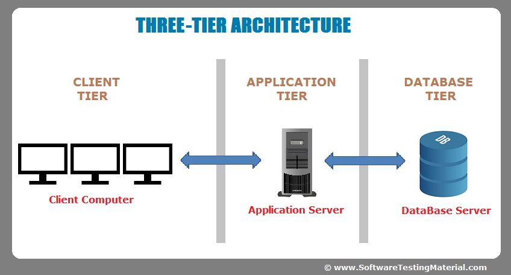

📊 Multitier Architecture — How Big Apps Are Built

Multitier architecture (or N-tier architecture) is a way of organizing large applications into separate layers. Each layer has its own job, and layers only talk to the layers next to them. The most common version is the 3-tier architecture, which splits an app into three parts: Presentation, Application, and Data.
✏️ My simple way to think about it: Imagine a restaurant. The dining area (where customers sit) is the presentation tier. The kitchen (where food is prepared) is the application tier. The storage room (where ingredients are kept) is the data tier. Each area has its own job, and they only communicate with the areas next to them.
🏗️ The 3-Tier Architecture Explained
🖥️ Tier 1 — Presentation Tier (Client/Browser)
This is what the user sees and interacts with. It's the web browser, the mobile app, or the desktop interface. Its job is to display information and capture user input (clicks, typing, form submissions). It doesn't store data or do complex business logic — it just shows things and sends requests up to the next tier.
Examples: HTML pages, React apps, mobile app screens.
⚙️ Tier 2 — Application Tier (Business Logic/Web Server)
This is the brain of the operation. It receives requests from the presentation tier, processes them, applies business rules (like "is this user logged in?" or "does this product have enough stock?"), and talks to the database when needed. It doesn't store data permanently — it just processes and passes information along.
Examples: A web server running Python, Java, Node.js, or PHP code.
💾 Tier 3 — Data Tier (Database)
This is where everything is stored permanently. It holds user accounts, product listings, orders, messages — all the data that the app needs to remember. The data tier only talks to the application tier, never directly to the user.
Examples: MySQL, PostgreSQL, MongoDB, Oracle.
✅ Benefits of Using Multitier Architecture
📈 Scalability
You can add more servers to one tier without touching the others. Too many users? Add more application servers.
🔧 Maintainability
If something breaks, you know which tier to fix. If the database is slow, you don't need to change the presentation layer.
🔒 Security
The data tier is hidden from users. Hackers can't directly attack your database — they have to go through the application tier first.
♻️ Reusability
The same application tier can serve a website, a mobile app, and an API. You write the logic once, use it everywhere.
📋 Real-World Example: An Online Store
- Presentation Tier — The product page you see in your browser, with "Add to Cart" buttons.
- Application Tier — The server that checks if the product is in stock, calculates tax, applies discounts, and processes your order.
- Data Tier — The database that stores product names, prices, inventory counts, and your order history.
💭 What I think: Before learning this, I thought websites were just HTML files sitting on a server. But big apps like Amazon, Netflix, or Instagram are incredibly complex. Multitier architecture lets teams work on different parts at the same time, and makes the whole system more reliable. It's one of those "invisible" things that makes modern apps possible.
🔗 How Tiers Communicate
- Presentation ↔ Application — HTTP/HTTPS requests (GET, POST, etc.)
- Application ↔ Data — SQL queries or API calls
← Back to all terms